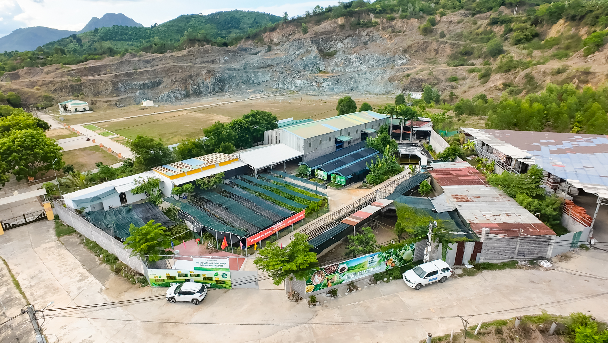

Từ Tâm Huyết Nhỏ - Thành Vườn Thảo Dược Hữu Cơ Lớn
Khởi nguồn từ một mong muốn đơn giản: trồng nên những loại cây thuốc lành tính, sạch và bền vững cho cộng đồng, chúng tôi đã xây dựng nên mô hình vườn thảo dược hữu cơ giữa thiên nhiên trong lành. Chúng tôi không chỉ trồng cây, mà còn gieo mầm tri thức, bảo tồn giá trị y học cổ truyền và lan tỏa lối sống xanh.